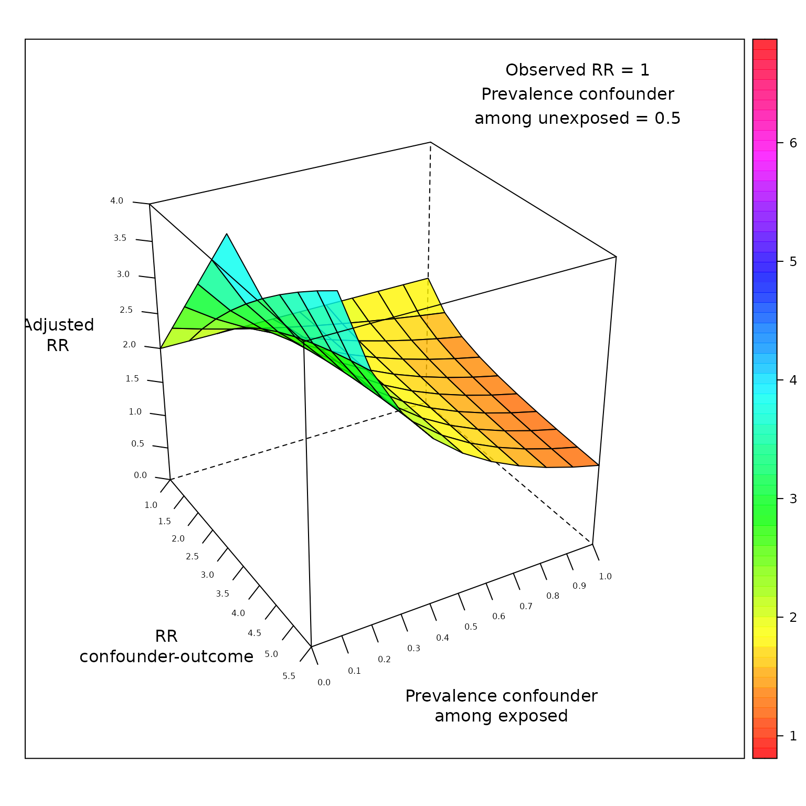
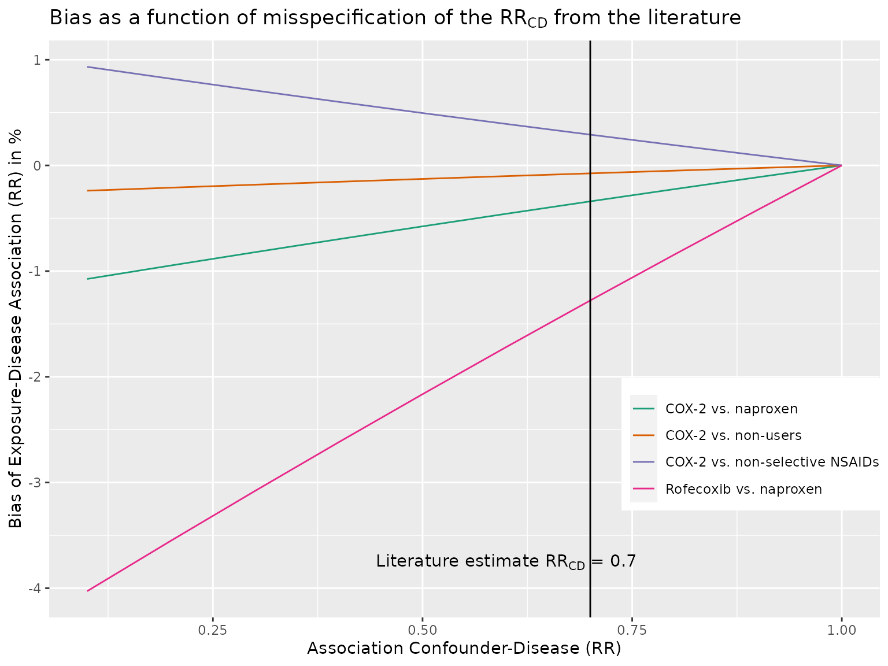

vignettes/d_other_sens.Rmd
d_other_sens.RmdOther functions could be useful and are not part of the book “Applying Quantitative Bias Analysis to Epidemiologic Data”. These functions are:
confounders.array: Bias due to unmeasured confounders based on confounding imbalance among exposed and unexposedconfounders.ext: Unmeasured confounders based on external measurementconfounders.evalue: E-value due to unmeasured confounderepisensr also offers the option to check the effect of residual confounding based on the array approach (Schneeweiss, 2006).
Even after controlling for confounding (in the design or analysis of a study), some residual confounding can still be present, because:
The array approach by Schneeweis provides a corrected RR based on the apparent, confounded, RR, the prevalence of the confounding factor among the exposed and unexposed, and the association between the confounder and the outcome.
Schneeweiss provides the (made-up) example of the association between TNF\(_\alpha\) blocking agents and Non-Hodgkin (NH) Lymphoma in rheumatoid arthritis (RA) patients. Assuming an observed relative risk of 2, that 50% of RA patients have a more progressive immunologic disease, and that more progressive disease is more likely to lead to NH lymphoma:
library(episensr)
## Loading required package: ggplot2confounders.array(crude.risk = 2, type = "binary", bias_parms = c(2.5, 0.1, 0.5))
##
## Adjusted RR: 3.04
##
## Percent bias: -34.29
##
## Input Bias Parameters:
## ----------------------
##
## RR(Confounder-Disease): 2.5
## p(Confounder+|Exposure+): 0.1
## p(Confounder+|Exposure-): 0.5The function takes values of the observed risk (2.0); if the covariates are binary, continuous, or on a risk difference scale; the association between confounder and outcome (let’s say here 2.5); the prevalence of the confounder among the exposed (let’s say 0.1); and the prevalence of the confounder among the unexposed. The adjusted RR is 3.04.
However, it is more interesting if we could keep some factors constant in our analysis (the crude risk of 2.0, the prevalence among the unexposed, 0.5), and vary the imbalance of the hypothetical unoberved confounder (association confounder-outcome from 1 to 5.5; prevalence among exposed, from 0 to 1):
dat <- expand.grid(RR_CD = seq(1, 5.5, 0.5), P_C1 = seq(0, 1, 0.1)) dat$RR_adj <- apply(dat, 1, function(x) confounders.array(2, type = "binary", bias_parms = c(x[1], x[2], 0.5), print = FALSE)[5])
Then adding fun with 3-d plots!
library(lattice) library(grid) wireframe(RR_adj ~ RR_CD * P_C1, data = dat, xlab = "RR\nconfounder-outcome", ylab = "Prevalence confounder\namong exposed", zlab = "Adjusted\nRR", drape = TRUE, colorkey = TRUE, scales = list(arrows = FALSE, cex = .5, tick.number = 10, z = list(arrows = FALSE), distance = c(1.5, 1.5, 1.5)), zlim = 0:4, light.source = c(10, 0, 10), col.regions = rainbow(100, s = 1, v = 1, start = 0, end = max(1, 100 - 1) / 100, alpha = .8), screen = list(z = -60, x = -60), panel = function(...) { panel.wireframe(...) grid.text("Observed RR = 1\nPrevalence confounder\namong unexposed = 0.5", 0.125, 0.175, default.units = "native") })

You can also use additional information not available in the main study to adjust for the effect of confounding. Sometimes you can get information from a representative sample to quantify the imbalance risk factors that are measured among the exposed group; and from the literature (RCT, observational studies) for the association between the confounder and the outcome.
We can use the example of Schneeweiss regarding the association between selective COX-2 inhibitor use and the incidence of MI.
Say we assume an exposure-disease association of 1 (null hypothesis). The more the truth is away from the null, the more bias in our estimate. However the less relevant unmeasured confounders become.
Let’s try:
confounders.ext(RR = 1, bias_parms = c(0.1, 1.6, 0.1, 0.51))
##
## Crude RR: 0.96
##
## Percent bias: -4.03
##
## Input Bias Parameters:
## ----------------------
##
## RR(Confounder-Disease): 0.1
## OR(Exposure category-Confounder): 1.6
## p(Confounder): 0.1
## p(Exposure): 0.51Same here, the interest lies in using the function over a range of values, while keeping some other constant. And we can extend to several confounders:
dat <- expand.grid(RR_CD = seq(0.1, 1, 0.1)) dat$nsaid <- apply(dat, 1, function(x) confounders.ext(1, bias_parms = c(x[1], 0.9, 0.1, 0.4), print = FALSE)[7]) dat$non_user <- apply(dat, 1, function(x) confounders.ext(1, bias_parms = c(x[1], 1.03, 0.09, 0.12), print = FALSE)[7]) dat$naproxen <- apply(dat, 1, function(x) confounders.ext(1, bias_parms = c(x[1], 1.15, 0.09, 0.79), print = FALSE)[7]) dat$rof_napro <- apply(dat, 1, function(x) confounders.ext(1, bias_parms = c(x[1], 1.6, 0.1, 0.51), print = FALSE)[7]) library(tidyverse) dat2 <- dat %>% gather(nsaid, non_user, naproxen, rof_napro, key = "COX2", value = "bias_perc") ggplot(dat2, aes(x = RR_CD, y = bias_perc, group = COX2, colour = COX2)) + geom_line() + scale_colour_brewer(palette = "Dark2", labels = c("COX-2 vs. naproxen", "COX-2 vs. non-users", "COX-2 vs. non-selective NSAIDs", "Rofecoxib vs. naproxen")) + geom_vline(xintercept = 0.7) + xlab("Association Confounder-Disease (RR)") + ylab("Bias of Exposure-Disease Association (RR) in %") + ggtitle(expression(paste("Bias as a function of misspecification of the ", RR[CD], " from the literature"))) + theme(legend.position = c(.85, .3), legend.title = element_blank()) + annotate("text", label = expression(paste("Literature estimate ", RR[CD], " = 0.7")), x = 0.6, y = -3.75)

E-value, introduced by VanderWeele et al., is the minimum strength of association on the risk ratio scale that an unmeasured confounder would need to have with both the exposure and the outcome, conditional on the measured covariates, to fully explain away a specific exposure-outcome association.
For example, a study by Victoria et al. found an association between formula-fed babies compared to breast-fed and respiratory death, RR = 3.9. What would be the strength of association for an unmeasured confounder needed to explain away this association? The E-value express the magnitude of the confounder associations that can produce confounding bias equal to the observed exposure-outcome association. This E-value is:
confounders.evalue(est = 3.9, lower_ci = 1.8, upper_ci = 8.7, type = "RR")
##
## --E-value--
## Point estimate CI closest to H_0
## RR: 3.900000 1.800000
## E-value: 7.263034 3.000000The E-value is 7.26, i.e. an unmeasured confounder must have a risk ratio of at least 7.26 with both the exposure and the outcome, and above and beyond the measured confounders, to explain away the observed risk ratio of 3.9. A weaker unmeasured confounder could not explain this RR. E-value for the CI closest to the null (i.e. 1) can also be reported.
Similarly, the minimum magnitude of both confounder associations to move away the observed association can be assessed for a non-null hypothesis. For example, the effect of anti-depressant use during pregnancy on infant cardiac defects was 1.06 [0.93–1.22] (Huybrechts et al.). The confidence interval includes 1 so no further unmeasured confounding is needed to shift the confidence interval to include 1, i.e. the E-value = 1. But what would be the strength of a confounder needed to shift RR to 1.2?
confounders.evalue(est = 1.06, lower_ci = 0.93, upper_ci = 1.22, type = "RR", true_est = 1.2)
##
## --E-value--
## Point estimate CI closest to H_0
## RR: 1.060000 1.220000
## E-value: 1.518753 1.146837We need an unmeasured confounder with a RR of 1.5 each with the outcome, cardiac defect, and the exposure, anti-depressant use, to move the risk ratio to 1.2. A weaker confounder could not shift the observed RR.
E-value can also be computed when the effect measure is:
RR,ORc,HRc,diff_RR and diff_OR.